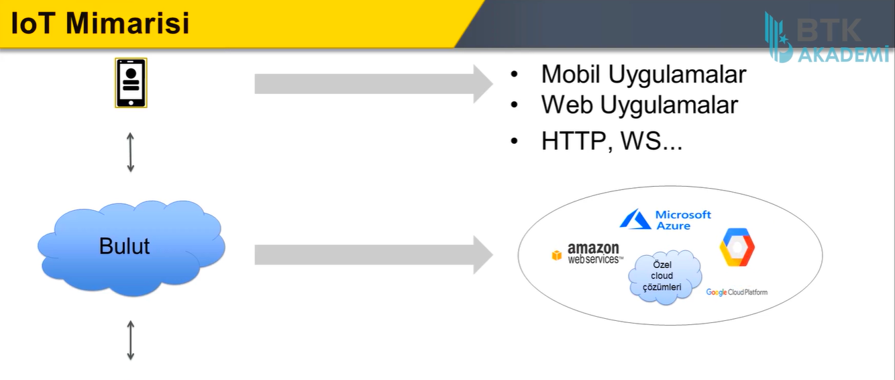
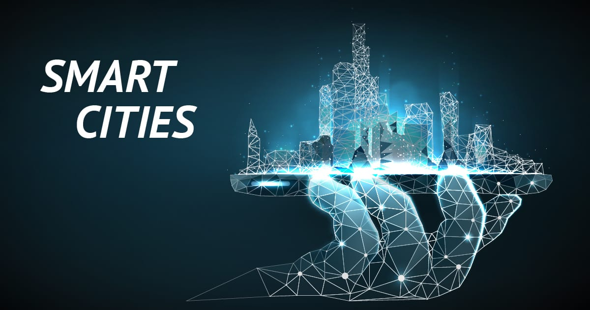
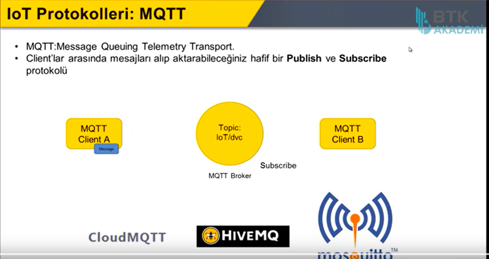
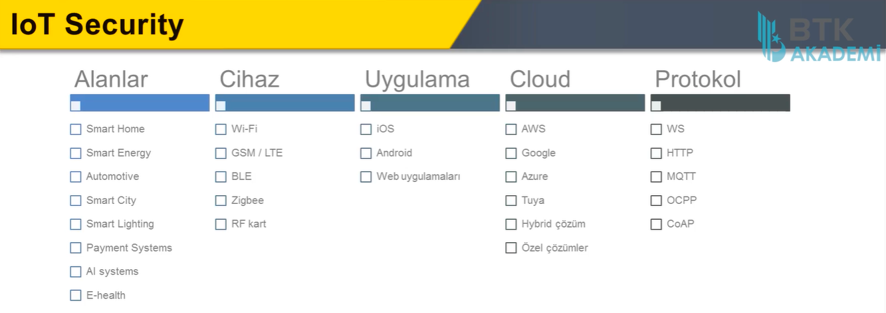
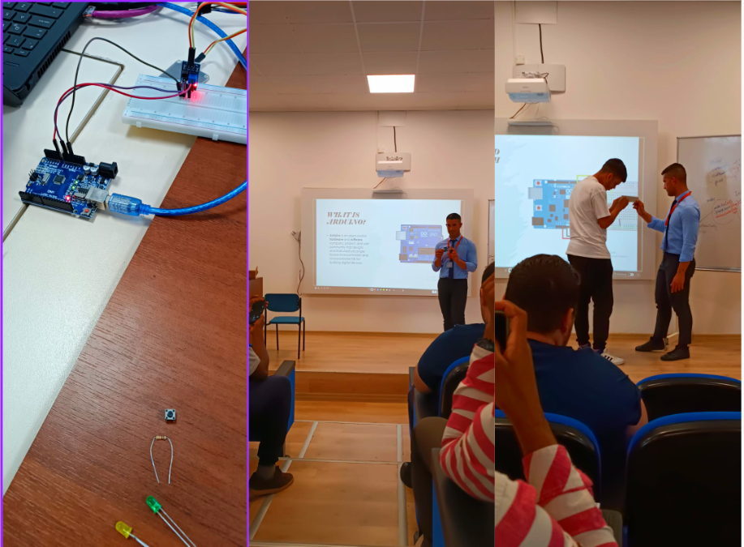
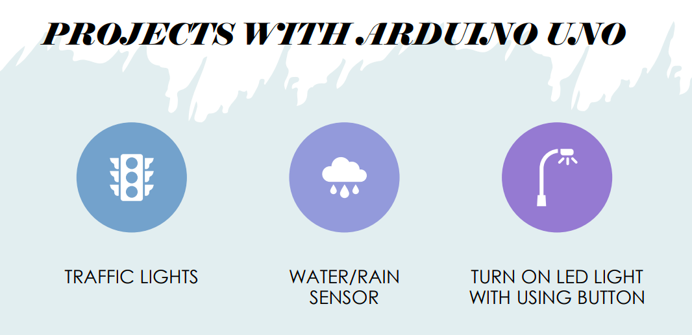

ACT-7

Second part of my portfolio is IOT (Internet Of Things). It develops so fast and people's need are changing. Actually i have explained already but i am going to again. "THE IOT" is : Create a network which includes physica devices and make them data exchange via internet (Cloud Service is very important.) Namely when you enter your home the entering process will be data and the command is "HELLO MR. FAHRİ" When devices sense this data (Entering Home) Speakers will say the command (HELLO MR. FAHRİ) When you are not in home you can see what is going on in it , you can run you ac from your phone , follow your washmachine by using your tablet. You can make clap and your lights can run again. There is no limit on this topic. I attend a program which is named "IOT"

I want to give some examples fields of "IOT"
1. Smarter Homes :
Natural Language Processing for the contextual processing
of voice commands. He has internet switches to operate the appliances plugged into them. (The Natural language Processing is very deep concept)
The Natural language Processing : As you known there are a lot of language in world. (Turkish , English , German...) It includes these languages
and use them by processing transfer the machines and making connecton between of them.
My another example of "IOT" are Smart Cities. Let's thing there is a loop and it runs everytime by itself. Monitoring Pollution With existing sensors, one can easily measure parameters
such as temperature, CO2 levels, smoke, and humidity. Thanks to that method people can measure of pollution and try to prevents it.

Protocols Of IOT
MQTT : Actually the basic goal is keeping devices are connected. They designed for people to transfer small of amount datas (not huge datas)
That is most populer communication protocol. There is a sender (Publish the message) and there is taking message (subscriber) There is a really huge weakness about MQTT ,
There is no evaluating namely what it takes as a message it sends it whatever it happens. (Big vulnerability) The security is weak we called that message as a "topic".
There are bad sides of it for instance your neighbour can get your phone and communicate with your cooker it increases so much and there can be really huge problems.

I want to show you the fileds of IOT of course it is more than that but basically that is like the picture which is under of this line.

I get all of these pictures and informations from the program of IOT (BTK ACADEMY) and i completed that program and i got certificate
I want to share with you a seminar about IOT. We learned IOT terms (Ardunio Uno , Kits , cables...) I will explain the seminar also IOT Requirements.
Let's begin with Ardunio Uno That is a microcontroller to provide connetion between computer and other accessories. That is really talented. (For coding usually C++)
It is small electronic card. Breadboard It protects the arduino (Brain of the project) against changable electric situations , that is really important
Leds it is up to project if your projects need leds you can use it they provide colorful lights. Sensors We need sensors to make sense the arduino outside situations
for examples (Water , Fire , Light ...) Repair Kit When we have a problem about physcal devices we can use the repair kit. Usb Cable To make connection between Ardunio and computer we need to use it
Other accessories Buttons and similar like this devices it can be change project by project if you need them you can use them. Resistance It checkst the resistance for 2 sides , resistance need to be balanced.

I will share with you some seminar slides about IOT Projects (Basic Designs) Logic is same Brain of project is (Ardunio) as you understand there is some sensors
cables and connectşon device wiht computers (Usb cables) there are again Breadboard to protect the system.
